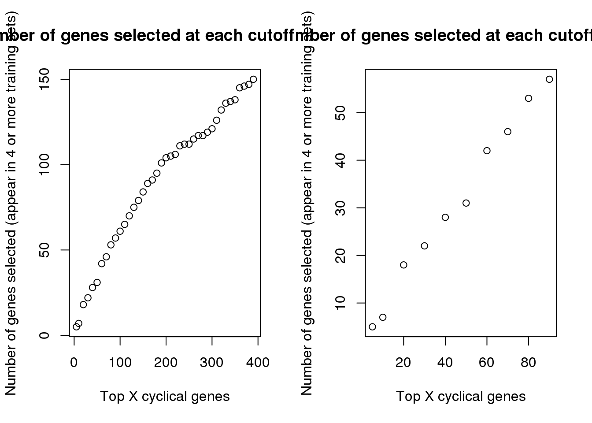
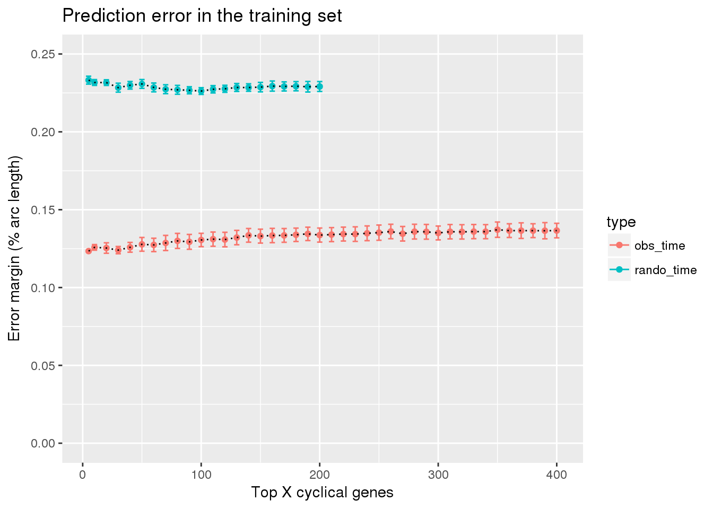

Finalizing the classifer results
Joyce Hsiao
- Pipeline
- Explore top cyclical genes
- Prediction error by top X cyclical genes
- Results: fucci expression predicting fucci time labels
- Results: random cyclical expression predicting random time
- Results: random cyclical expression predicting fucci time labels
- Results: fucci experssion patterns predicting fucci time labels
- Result: combine fucci expression predicting fucci labels with fucci experssion predicting random cell time labels
- Session information
Last updated: 2018-07-15
Code version: 0915285
Pipeline
Split data to validation samples and training samples.
- The split samples are saved as
data/withheld.rdsanddata/training.rds.
- The code used to generated the split samples is saved in
code/working/makedata_supervised.R.
- The split samples are saved as
In the training sample, repeat the following 5 times. Each time, take 4/5 of the samples selected at random, fit trendfilter and identified the top X cyclical genes, and the compute the prediction error margin as a function of the top X cyclical genes.
code/run_methods.R: runs all methods, including supervised, unsupervised trendfilter, unsupervised bspline, unsupervised lowess, seurat) and compute prediction error margin.
code/working/job_run_methods.train.Rcallscode/run_methods.Rcode/working/job_run_methods.train.sbatchsubmits jobs one fold at a time.
Based on the training sample results, select the top best X genes and fit to the validation sample. Compute and compare the methods’ performance on the validation sample.
About the prediction error margin under the null or when predicting random cells, I permuted the cell labels in the training samples. Then, in each training set, I use cyclical gene expression patterns learned from the fucci time to predict the random cell time labels. The margin of error at randomis about 25%, that is, 50% of the half arc length. In our analysis, I found it to be slower lower than 25%; an possible explanation is that before computing the prediction margin, we shift and flip the estimated cell time so that the prediction margin is minimized.
Explore top cyclical genes
Choose across the 5 folds (training sets), the genes that appear among the top X cyclical genes in at least 4 training sets.
data_training_cyclical_genes.fold.1 <- readRDS("../data/results/data_training_cyclical_genes.fold.1.rds")
data_training_cyclical_genes.fold.2 <- readRDS("../data/results/data_training_cyclical_genes.fold.2.rds")
data_training_cyclical_genes.fold.3 <- readRDS("../data/results/data_training_cyclical_genes.fold.3.rds")
data_training_cyclical_genes.fold.4 <- readRDS("../data/results/data_training_cyclical_genes.fold.4.rds")
data_training_cyclical_genes.fold.5 <- readRDS("../data/results/data_training_cyclical_genes.fold.5.rds")
data_cyclical_list <- list(data_training_cyclical_genes.fold.1,
data_training_cyclical_genes.fold.2,
data_training_cyclical_genes.fold.3,
data_training_cyclical_genes.fold.4,
data_training_cyclical_genes.fold.5)
library(gplots)
top100 <- lapply(1:5, function(i) {
rownames(data_cyclical_list[[i]])[order(data_cyclical_list[[i]]$pve,
decreasing = T)[1:100]]
})
venn( top100 )
top100_list <- do.call(cbind, lapply(1:5, function(i) {
top_list <- rownames(data_cyclical_list[[i]])[order(data_cyclical_list[[i]]$pve,
decreasing = T)[1:100]]
rownames(data_cyclical_list[[i]]) %in% top_list
}) )
rownames(top100_list) <- rownames(data_cyclical_list[[1]])
which_100 <- rownames(top100_list)[which(rowSums(top100_list)>=4)]
library(gplots)
ngenes <- c(5, seq(10, nrow(data_cyclical_list[[1]]), 10))
genes_list <- lapply(1:length(ngenes), function(i) {
ngene <- ngenes[i]
tmp <- do.call(cbind, lapply(1:5, function(fold) {
top_list <- rownames(data_cyclical_list[[fold]])[order(data_cyclical_list[[fold]]$pve,
decreasing = T)[1:ngene]]
rownames(data_cyclical_list[[fold]]) %in% top_list
}) )
rownames(tmp) <- rownames(data_cyclical_list[[fold]])
return(rownames(tmp)[rowSums(tmp)>=4])
})
names(genes_list) <- ngenes
saveRDS(genes_list,
file = "../data/results/results_topgenes.rds")genes_list <- readRDS(file = "../data/results/results_topgenes.rds")
par(mfrow=c(1,2))
plot(names(genes_list)[1:40],
sapply(genes_list, length)[1:40],
main = "Number of genes selected at each cutoff (<=400)",
xlab = "Top X cyclical genes",
ylab = "Number of genes selected (appear in 4 or more training sets)")
plot(names(genes_list)[1:10],
sapply(genes_list, length)[1:10],
main = "Number of genes selected at each cutoff (<=90)",
xlab = "Top X cyclical genes",
ylab = "Number of genes selected (appear in 4 or more training sets)")
Repeat for when cyclical genes are detected under the scenario where the cell times are random. This givens random cyclical gene expression patterns that we later use to predict fucci-cell time or random cell times.
data_training_cyclical_genes.fold.1 <- readRDS("../data/results/data_training_cyclical_genes_permute.fold.1.rds")
data_training_cyclical_genes.fold.2 <- readRDS("../data/results/data_training_cyclical_genes_permute.fold.2.rds")
data_training_cyclical_genes.fold.3 <- readRDS("../data/results/data_training_cyclical_genes_permute.fold.3.rds")
data_training_cyclical_genes.fold.4 <- readRDS("../data/results/data_training_cyclical_genes_permute.fold.4.rds")
data_training_cyclical_genes.fold.5 <- readRDS("../data/results/data_training_cyclical_genes_permute.fold.5.rds")
data_cyclical_list <- list(data_training_cyclical_genes.fold.1,
data_training_cyclical_genes.fold.2,
data_training_cyclical_genes.fold.3,
data_training_cyclical_genes.fold.4,
data_training_cyclical_genes.fold.5)
library(gplots)
ngenes <- c(5, seq(10, nrow(data_cyclical_list[[1]]), 10))
genes_list <- lapply(1:length(ngenes), function(i) {
ngene <- ngenes[i]
tmp <- do.call(cbind, lapply(1:5, function(fold) {
top_list <- rownames(data_cyclical_list[[fold]])[order(data_cyclical_list[[fold]]$pve,
decreasing = T)[1:ngene]]
rownames(data_cyclical_list[[fold]]) %in% top_list
}) )
rownames(tmp) <- rownames(data_cyclical_list[[fold]])
return(rownames(tmp)[rowSums(tmp)>=4])
})
names(genes_list) <- ngenes
saveRDS(genes_list,
file = "../data/results/results_topgenes_permute.rds")Intersetions across training sets
genes_list <- readRDS(file = "../data/results/results_topgenes.rds")
genes_list_permute <- readRDS(file = "../data/results/results_topgenes_permute.rds")At top X cutoff, how many of the fucci cyclical genes also appear in the random cyclical genes list? The proportion below says that at top 190 cyclical genes, we start to detect some random cyclical genes.
Comment: note that this can’t be used as the sole selection criteria. The random cyclical genes may change between different random cell time list. In the current project, we have labels that we can used to estimate prediction margin and select the top X cyclical genes accordingly.
fdr <- sapply(1:length(genes_list), function(i) {
a <- unlist(genes_list[i])
b <- unlist(genes_list_permute[i])
ll <- length(intersect(b,a))
ll/length(a)
})
names(fdr) <- names(genes_list)
saveRDS(fdr, file = "../output/method-train-classifiers-all.Rmd/fdr.rds")fdr <- readRDS(file = "../output/method-train-classifiers-all.Rmd/fdr.rds")
par(mfrow=c(1,2))
plot(as.numeric(names(fdr))[1:41], fdr[1:41],
xlab="Top X cyclical genes",
ylab="Fraction of permuted in observed",
main="False discovery rate in top 400",
pch=16, cex=.7,
xlim=c(1,400), ylim=c(0,.06))
abline(v=180, col="gray50")
ngenes <- as.numeric(names(genes_list))
plot(x=ngenes,
y=sapply(genes_list, function(x) length(x)),
xlab="Top X cyclical genes in training set",
ylab="Number of shared cyclical genes",
main = "Shared genes in top 400 cyclical",
xlim=c(0,400), pch=16, cex=.7, col="gray50", ylim=c(1,110))
points(x=ngenes,
y=sapply(genes_list_permute, function(x) length(x)),
pch=16, cex=.7, col="blue")
abline(v=180, col="gray50")Prediction error by top X cyclical genes
code for summarize results
diff_time_wrapper <- function(results_list) {
methods_list <- sapply(names(results_list),
function(x) strsplit(x, split=".", fixed=TRUE)[[1]][2])
diff_time_list <- do.call(rbind, lapply(1:length(results_list), function(i) {
diff_time <- results_list[[i]]$diff_time
diff_mean <- mean(diff_time/2/pi)
return(data.frame(diff_mean=diff_mean,
# diff_se=diff_se,
methods=methods_list[i]))
}) )
return(diff_time_list)
}summarize results
fucci cyclical expression predicting cell time
Random cyclical expression patterns predicting random cell times
Random cyclical expression patterns predicting fucci cell times
fucci cyclical expression patterns predicting random cell times
Comment: we later use 4 to compute prediction error margin under non-fucci cell time or random cell time.
ngenes <- c(5, seq(10,400, by=10))
train_top <- do.call(rbind, lapply(1:length(ngenes), function(i) {
ngene <- ngenes[i]
train_topX <- do.call(rbind, lapply(1:5, function(fold) {
fl_name <- paste0("../data/results/results_train.fold.",fold,".top",ngene,".rds")
df <- readRDS(fl_name)
out <- diff_time_wrapper(df$fit.test)
out$fold <- fold
return(out)
}) )
train_topX$ngenes <- ngene
#return(train_topX)
agg_mn <- aggregate(diff_mean ~ methods,
data=train_topX, FUN=mean)
agg_sd <- aggregate(diff_mean ~ methods,
data=train_topX, FUN=sd)
obj <- data.frame(methods=agg_mn$methods,
diff_mean=agg_mn$diff_mean,
diff_se=agg_sd$diff_mean/sqrt(5))
obj$ngenes <- ngene
return(obj)
}) )
saveRDS(train_top, file = "../output/method-train-classifiers-all.Rmd/diff_time_all.rds")
ngenes <- c(5, seq(10,200, by=10))
train_top_permute <- do.call(rbind, lapply(1:length(ngenes), function(i) {
ngene <- ngenes[i]
train_topX <- do.call(rbind, lapply(1:5, function(fold) {
fl_name <- paste0("../data/results/results_train_permute.fold.",
fold,".top",ngene,".rds")
df <- readRDS(fl_name)
out <- diff_time_wrapper(df$fit.test)
out$fold <- fold
return(out)
}) )
train_topX$ngenes <- ngene
#return(train_topX)
agg_mn <- aggregate(diff_mean ~ methods,
data=train_topX, FUN=mean)
agg_sd <- aggregate(diff_mean ~ methods,
data=train_topX, FUN=sd)
obj <- data.frame(methods=agg_mn$methods,
diff_mean=agg_mn$diff_mean,
diff_se=agg_sd$diff_mean/sqrt(5))
obj$ngenes <- ngene
return(obj)
}) )
saveRDS(train_top_permute,
file = "../output/method-train-classifiers-all.Rmd/diff_time_all_permute.rds")
ngenes <- c(5, seq(10,200, by=10))
train_top_permute <- do.call(rbind, lapply(1:length(ngenes), function(i) {
ngene <- ngenes[i]
train_topX <- do.call(rbind, lapply(1:5, function(fold) {
fl_name <- paste0("../data/results/results_train_permute_onrandom.fold.",
fold,".top",ngene,".rds")
df <- readRDS(fl_name)
out <- diff_time_wrapper(df$fit.test)
out$fold <- fold
return(out)
}) )
train_topX$ngenes <- ngene
#return(train_topX)
agg_mn <- aggregate(diff_mean ~ methods,
data=train_topX, FUN=mean)
agg_sd <- aggregate(diff_mean ~ methods,
data=train_topX, FUN=sd)
obj <- data.frame(methods=agg_mn$methods,
diff_mean=agg_mn$diff_mean,
diff_se=agg_sd$diff_mean/sqrt(5))
obj$ngenes <- ngene
return(obj)
}) )
saveRDS(train_top_permute,
file = "../output/method-train-classifiers-all.Rmd/diff_time_rando_on_fucci.rds")
ngenes <- c(5, seq(10,200, by=10))
train_top_permute <- do.call(rbind, lapply(1:length(ngenes), function(i) {
ngene <- ngenes[i]
train_topX <- do.call(rbind, lapply(1:5, function(fold) {
fl_name <- paste0("../data/results/results_train_permute_oncyclical.fold.",
fold,".top",ngene,".rds")
df <- readRDS(fl_name)
out <- diff_time_wrapper(df$fit.test)
out$fold <- fold
return(out)
}) )
train_topX$ngenes <- ngene
#return(train_topX)
agg_mn <- aggregate(diff_mean ~ methods,
data=train_topX, FUN=mean)
agg_sd <- aggregate(diff_mean ~ methods,
data=train_topX, FUN=sd)
obj <- data.frame(methods=agg_mn$methods,
diff_mean=agg_mn$diff_mean,
diff_se=agg_sd$diff_mean/sqrt(5))
obj$ngenes <- ngene
return(obj)
}) )
saveRDS(train_top_permute,
file = "../output/method-train-classifiers-all.Rmd/diff_time_fucci_on_rando.rds")Results: fucci expression predicting fucci time labels
train_top <- readRDS("../output/method-train-classifiers-all.Rmd/diff_time_all.rds")
library(ggplot2)
ggplot(train_top,
aes(x=ngenes, y=diff_mean, color=methods)) +
geom_errorbar(subset(train_top, methods == "supervised"),
mapping=aes(ymin=diff_mean-diff_se, ymax=diff_mean+diff_se)) +
geom_point() + geom_line(lty=3) +
ylab("Error margin (% arc length)") + xlab("Top X cyclical genes") +
ggtitle("Prediction error in the training set")ggplot(subset(train_top, methods == "supervised"),
aes(x=ngenes, y=diff_mean)) +
geom_errorbar(subset(train_top, methods == "supervised"),
mapping=aes(ymin=diff_mean-diff_se, ymax=diff_mean+diff_se),
color="blue") +
geom_point() + geom_line(lty=3) +
ylab("Error margin (% arc length)") + xlab("Top X cyclical genes") +
ggtitle("Prediction error in the training set")Check between 5 genes and 100 genes. See very small difference between 5 genes and 100 genes in prediction error margin.
#ngenes <- c(5, seq(10,400, by=10))
ngenes <- c(5, 10, 20, 100)
train_top <- lapply(1:length(ngenes), function(i) {
ngene <- ngenes[i]
train_topX <- do.call(rbind, lapply(1:5, function(fold) {
fl_name <- paste0("../data/results/results_train.fold.",fold,".top",ngene,".rds")
df <- readRDS(fl_name)
out <- diff_time_wrapper(df$fit.test)
out$fold <- fold
return(out)
}) )
train_topX$ngenes <- ngene
return(data.frame(train_topX))
})
tmp <- do.call(cbind, train_top)
tmp <- tmp[tmp$methods== "supervised",]
tmp <- tmp[,c(3,1,5, 9, 13)]
colnames(tmp) <- c("fold", paste0("top",c(5, 10, 20, 100)))
print(tmp) fold top5 top10 top20 top100
fit.supervised 1 0.1238852 0.1303853 0.1359135 0.1426843
fit.supervised1 2 0.1237436 0.1294322 0.1158099 0.1253717
fit.supervised2 3 0.1248024 0.1234679 0.1249421 0.1272697
fit.supervised3 4 0.1219603 0.1208361 0.1217305 0.1192759
fit.supervised4 5 0.1226044 0.1248657 0.1284547 0.1381025Results: random cyclical expression predicting random time
train_top_permute <- readRDS("../output/method-train-classifiers-all.Rmd/diff_time_all_permute.rds")
library(ggplot2)
ggplot(train_top_permute,
aes(x=ngenes, y=diff_mean, color=methods)) +
geom_errorbar(subset(train_top_permute, methods == "supervised"),
mapping=aes(ymin=diff_mean-diff_se, ymax=diff_mean+diff_se)) +
geom_point() + geom_line(lty=3) +
ylab("Error margin (% arc length)") + xlab("Top X cyclical genes") +
ggtitle("Prediction error in the training set")
ggplot(subset(train_top_permute, methods == "supervised"),
aes(x=ngenes, y=diff_mean)) +
geom_errorbar(subset(train_top_permute, methods == "supervised"),
mapping=aes(ymin=diff_mean-diff_se, ymax=diff_mean+diff_se),
color="blue") +
geom_point() + geom_line(lty=3) +
ylab("Error margin (% arc length)") + xlab("Top X cyclical genes") +
ggtitle("Prediction error in the training set")
Results: random cyclical expression predicting fucci time labels
train_rando_on_fucci <- readRDS("../output/method-train-classifiers-all.Rmd/diff_time_rando_on_fucci.rds")
library(ggplot2)
ggplot(subset(train_rando_on_fucci, methods == "supervised"),
aes(x=ngenes, y=diff_mean)) +
geom_errorbar(subset(train_rando_on_fucci, methods == "supervised"),
mapping=aes(ymin=diff_mean-diff_se, ymax=diff_mean+diff_se),
color="blue") +
geom_point() + geom_line(lty=3) +
ylab("Error margin (% arc length)") + xlab("Top X cyclical genes") +
ggtitle("Random cyclical genes predicting fucci times")Results: fucci experssion patterns predicting fucci time labels
train_fucci_on_rando <- readRDS("../output/method-train-classifiers-all.Rmd/diff_time_fucci_on_rando.rds")
ggplot(subset(train_fucci_on_rando, methods == "supervised"),
aes(x=ngenes, y=diff_mean)) +
geom_errorbar(subset(train_fucci_on_rando, methods == "supervised"),
mapping=aes(ymin=diff_mean-diff_se, ymax=diff_mean+diff_se),
color="blue") +
geom_point() + geom_line(lty=3) +
ylab("Error margin (% arc length)") + xlab("Top X cyclical genes") +
ggtitle("fucci cyclical genes predicting random times")Result: combine fucci expression predicting fucci labels with fucci experssion predicting random cell time labels
train_fucci_on_rando <- readRDS("../output/method-train-classifiers-all.Rmd/diff_time_fucci_on_rando.rds")
train_top <- readRDS("../output/method-train-classifiers-all.Rmd/diff_time_all.rds")
library(ggplot2)
df <- rbind(data.frame(subset(train_top, methods == "supervised"),
type="obs_time"),
data.frame(subset(train_fucci_on_rando, methods == "supervised"),
type="rando_time"))
ggplot(df,
aes(x=ngenes, y=diff_mean, group=type)) +
geom_errorbar(df,
mapping=aes(ymin=diff_mean-diff_se, ymax=diff_mean+diff_se,
color=type)) +
geom_point(aes(color=type)) + geom_line(lty=3) +
ylab("Error margin (% arc length)") + xlab("Top X cyclical genes") +
ggtitle("Prediction error in the training set") +
ylim(0,.25) 
Session information
sessionInfo()R version 3.4.3 (2017-11-30)
Platform: x86_64-pc-linux-gnu (64-bit)
Running under: Scientific Linux 7.4 (Nitrogen)
Matrix products: default
BLAS/LAPACK: /software/openblas-0.2.19-el7-x86_64/lib/libopenblas_haswellp-r0.2.19.so
locale:
[1] LC_CTYPE=en_US.UTF-8 LC_NUMERIC=C
[3] LC_TIME=en_US.UTF-8 LC_COLLATE=en_US.UTF-8
[5] LC_MONETARY=en_US.UTF-8 LC_MESSAGES=en_US.UTF-8
[7] LC_PAPER=en_US.UTF-8 LC_NAME=C
[9] LC_ADDRESS=C LC_TELEPHONE=C
[11] LC_MEASUREMENT=en_US.UTF-8 LC_IDENTIFICATION=C
attached base packages:
[1] stats graphics grDevices utils datasets methods base
other attached packages:
[1] ggplot2_2.2.1
loaded via a namespace (and not attached):
[1] Rcpp_0.12.17 digest_0.6.15 rprojroot_1.3-2 plyr_1.8.4
[5] grid_3.4.3 gtable_0.2.0 backports_1.1.2 git2r_0.21.0
[9] magrittr_1.5 scales_0.5.0 evaluate_0.10.1 pillar_1.1.0
[13] rlang_0.1.6 stringi_1.1.6 lazyeval_0.2.1 rmarkdown_1.10
[17] labeling_0.3 tools_3.4.3 stringr_1.2.0 munsell_0.4.3
[21] yaml_2.1.16 compiler_3.4.3 colorspace_1.3-2 htmltools_0.3.6
[25] knitr_1.20 tibble_1.4.2 This R Markdown site was created with workflowr